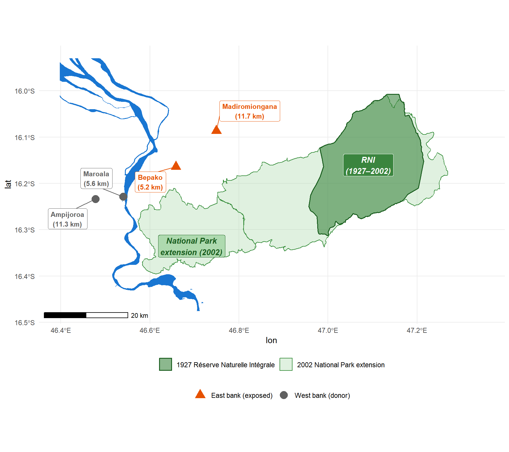
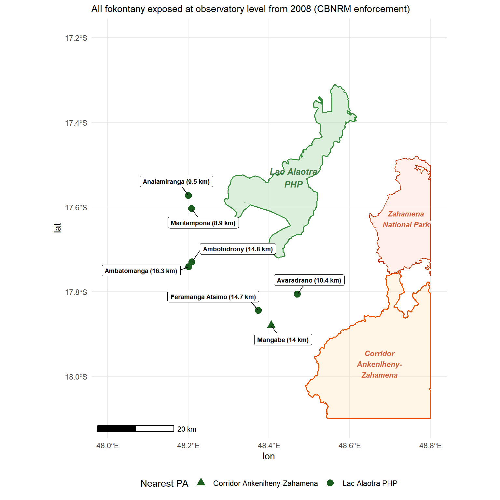
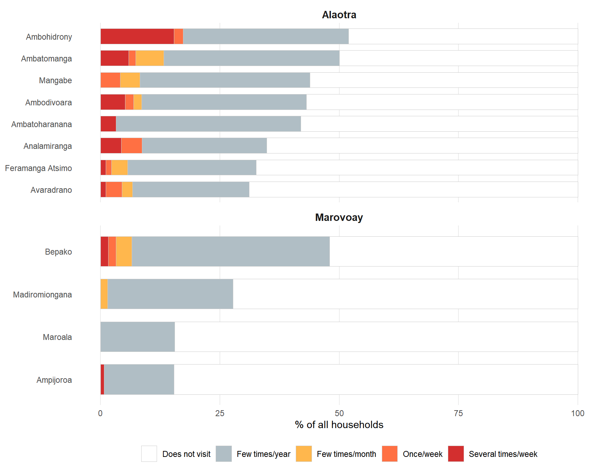

| Fokontany | Bank | Dist. to RNI (pre-2002) | Dist. to NP (post-2002) | Effective dist. | Role |
|---|---|---|---|---|---|
| Bepako | East | 33 km | 5.2 km | 5.2 km | Exposed (from 2003) |
| Madiromiongana | East | 25.1 km | 11.7 km | 11.7 km | Exposed (from 2003) |
| Ampijoroa | West | 51.2 km | 11.3 km | 26.3 km (river detour) | Donor (control) |
| Maroala | West | 44.7 km | 5.6 km | 20.6 km (river detour) | Donor (control) |
| Effective distance adds a 15 km river-crossing penalty for west-bank fokontany. | |||||
Identification Strategy
How we estimate the causal effect of protected areas on household income
The central question of this study is whether the creation or expansion of protected areas caused changes in household income — or whether observed income differences merely reflect pre-existing trends. This chapter explains how we isolate causal effects despite the fact that PA placement is not random and household surveys were not designed for conservation impact evaluation.
The strategy has four parts. First, we define two natural experiments that provide plausible exposure–control comparisons (Section 1). Second, we explain how the survey design constrains the unit of analysis (Section 2). Third, we describe the statistical method used to construct counterfactual income trajectories (Section 3). Fourth, we briefly introduce three additional cases that extend the analysis (Section 4).
1 Two natural experiments
We exploit two events during the ROS survey period where a new or expanded PA began to impose restrictions on communities that had been surveyed before the PA became operative. The two cases differ in their conservation governance model — strict exclusion at Ankarafantsika versus participatory management at Lac Alaotra — providing a built-in comparison of how governance type mediates income effects.
1.1 Marovoay and Ankarafantsika National Park (2003)
1.1.1 The 2002 park extension
The Ankarafantsika National Park was formally extended by Decree 2002-798 on 7 August 2002, merging the former Réserve Naturelle Intégrale (60,500 ha, 1927) with forest reserves into a 136,500 ha national park under IUCN Category II (strict nature conservation). We set the exposure year to 2003 — the first full ROS survey year following the decree.1
Critically, the 2002 extension was the first event to impose binding land-use restrictions on the communities adjacent to the forest reserve zone. The earlier designations had very different de facto implications:
- The 1927 Réserve Naturelle Intégrale covered the inland plateau to the north-east, geographically separate from the Marovoay communities. The east-bank fokontany had no direct interface with the strictly protected RNI.
- The 1929 forest reserve was not a conservation zone but a timber and resource reserve under the forest administration. Analyses of this period found no effective enforcement: subsistence agriculture, cattle grazing, and charcoal production continued unimpeded (Brondeau 1999).
The 2002 reclassification merged these into a single national park where slash-and-burn agriculture (tavy), charcoal production, and non-timber forest product extraction were explicitly prohibited — and, crucially, enforced. Enforcement capacity was supported by international conservation funding from the World Bank and bilateral donors as part of Madagascar’s third Environmental Action Plan. Figure 1 maps the spatial extent of the consolidation using dynamic WDPA boundary data: the original RNI (dark green) covered the inland plateau to the north-east, while the 2002 extension (light green) more than doubled the protected area to encompass forest reserves abutting the Marovoay communities (Alonso et al. 2002).
1.1.2 The Betsiboka River as a natural barrier
The Marovoay observatory comprises four fokontany (villages) split by the Betsiboka River — a major, permanently flowing watercourse wider than 10 metres. Crossing is possible only under certain hydrological conditions, often requiring long detours or costly boat transport. In practice, flows of people, goods, and services run along the Marovoay downstream axis rather than across the river.
This geographic feature creates a natural experiment: east-bank communities have direct walking access to the park, while west-bank communities face a substantial access penalty — roughly tripling the effective travel distance. We formalize this with a river-crossing penalty of 15 km added to the straight-line distance for west-bank fokontany, reflecting the detour required to reach the park on foot (no bridge exists in the immediate vicinity):
The 15 km river-crossing penalty is conservative. In rural Madagascar, where most travel is on foot, the actual additional travel time likely exceeds the implied 3-hour walk. An effective distance threshold of 12 km — corresponding to approximately a 2.5-hour daily commuting limit — places both east-bank villages within the PA’s zone of influence and both west-bank villages outside it, cleanly separating “exposed” from “donor” communities.

1.1.3 Behavioural validation from the 2025 resurvey
The exposure assignment rests on the assumption that the Betsiboka River effectively separates communities into “exposed” and “not exposed” groups. The 2025 resurvey provides a direct test of this assumption through its dedicated protected area usage module (UM), which asked all 1,026 households whether they visit the PA zone, what activities they pursue there, and why non-visitors stay away.
| PA Interaction by Fokontany | |||||
| Marovoay observatory, 2025 resurvey (N = 519 households) | |||||
| Site | Bank | N | % visit PA zone | % extractive use | % cite 'forbidden' |
|---|---|---|---|---|---|
| Bepako | East | 123 | 49 | 11 | 19 |
| Madiromiongana | East | 137 | 28 | 9 | 36 |
| Ampijoroa | West | 143 | 15 | 1 | 11 |
| Maroala | West | 116 | 16 | 2 | 2 |
Three findings support the exposure assignment:
Visitation asymmetry. 38% of east-bank households report visiting the park zone versus 15% on the west bank. However, among visitors on both banks, the dominant activity is leisure walks (67%); only 10% of east-bank households report extractive use (food gathering, woodcutting). 91% of all visitors go only a few times per year.
Awareness of prohibition. At Madiromiongana — the east-bank fokontany closest to the park’s core — 34% of non-visitors cite legal prohibition as their reason for not going, versus 2% at Maroala on the west bank. The park’s legal status is a binding constraint on the east bank, not the west.
Distance as the dominant barrier. Across both banks, the most commonly cited reason for not visiting is distance (lavitra in Malagasy), mentioned by 54% of non-visitors. The river makes the park behaviourally distant for west-bank communities even where it is geographically close.
1.2 Lac Alaotra and the Protected Landscape (2008)
1.2.1 A different conservation model
Lac Alaotra is Madagascar’s largest lake and a critical habitat for the Alaotran gentle lemur (Hapalemur alaotrensis). The Ramsar Convention listed the site in 2003. In 2015, the lake and its marshlands were formally designated as a Paysage Harmonieux Protégé (PHP, 425 km², IUCN Category V — a multipurpose landscape where sustainable use is permitted). However, enforcement through community-based natural resource management (CBNRM) agreements and transferts de gestion had intensified from around 2008 under the management of Durrell Wildlife Conservation Trust. A temporary protection decree (Arrêté 381/2007, 1 August 2007) preceded the intensification. We set the exposure year to 2008, consistent with the annual-survey convention applied to Ankarafantsika.2
The key difference from Ankarafantsika is governance: rather than exclusionary enforcement prohibiting all resource extraction, Alaotra’s CBNRM framework regulates lake-marsh use through community-managed access rules, seasonal fishing closures, and habitat restoration agreements. This participatory model is designed to accommodate livelihoods rather than exclude them.
1.2.2 Why all Alaotra communities are exposed
Unlike Marovoay, there is no natural barrier separating “exposed” from “unexposed” communities at Alaotra. The observatory’s seven fokontany (across three historical survey sites) all depend on the lake-marsh ecosystem. The CBNRM enforcement mechanism — seasonal closures, gear restrictions, marsh-burning bans — applies to all lake-adjacent communities through transferts de gestion.
A complication specific to Alaotra is the proximity of some eastern hamlets to two additional protected areas: the Corridor Ankeniheny-Zahamena (CAZ, IUCN Category VI, managed by Conservation International) and the Zahamena National Park (IUCN Category II), which lies north of the CAZ. The hamlet of Mangabe lies closer to the CAZ boundary (~14 km) than to the Lac Alaotra PHP, creating dual-PA exposure.
We therefore treat the entire observatory as a single exposed unit, aggregated to a site-level mean. This is a stronger assumption than the site-level assignment at Marovoay, but it is supported by the uniform enforcement mechanism (CBNRM applies to all lake-adjacent communities) and the behavioural data from the 2025 resurvey discussed below.

1.2.3 Behavioural validation from the 2025 resurvey
| PA Interaction by Fokontany | ||||
| Alaotra observatory, 2025 resurvey (N = 507 households) | ||||
| Site | N | % visit zone | % extractive | % fish/hunt |
|---|---|---|---|---|
| Ambatomanga | 68 | 51 | 26 | 21 |
| Ambodivoara | 58 | 45 | 21 | 10 |
| Ambohidrony | 52 | 54 | 21 | 13 |
| Ambatoharanana | 31 | 45 | 13 | 10 |
| Analamiranga | 46 | 41 | 13 | 4 |
| Mangabe | 73 | 47 | 8 | 5 |
| Avaradrano | 90 | 38 | 7 | 0 |
| Feramanga Atsimo | 89 | 37 | 3 | 0 |
The Alaotra data reveal an important distinction between visiting and depending on the PA zone:
- Visiting is common but mostly non-extractive. 37–54% of households report visiting the lake-marsh zone, but the survey question captures any visit including leisure walks. Among visitors, 78% go only a few times per year.
- Extractive use is concentrated and heterogeneous. Fishing and hunting — the dominant extractive activity, reflecting traditional lake use — involves 21% of households in Ambatomanga but none in Avaradrano or Feramanga Atsimo. The overall extractive rate is 13% of all households.
- Distance, not prohibition, explains non-use. Among Alaotra non-visitors, the most cited reason is distance (lavitra), at 35%. Legal prohibition is cited by only 8%, consistent with the less restrictive multipurpose framework.
The relatively uniform visiting rate but sharply differentiated extractive rate suggests that proximity to the ecosystem — rather than engagement with PA-regulated resources — drives the visiting pattern. The uniform exposure assumption is therefore stronger for the CBNRM enforcement mechanism (which applies to all lake-adjacent communities) than for individual extractive dependence (which varies across fokontany).
1.3 PA zone usage intensity across both sites
Figure 3 provides a cross-site comparison of how intensively households use the PA zone. The contrast between the two observatories is stark: at Marovoay, the majority of households never visit the park (white bars), with the river barrier clearly separating high-access sites (Bepako) from low-access ones (Ampijoroa, Maroala). At Alaotra, a larger share of households visit the zone, but almost all do so infrequently (grey bars). Regular visitors — monthly or more, shown in warm colours — are a thin sliver confined to the closest sites.

1.4 Extensions: three additional cases (2006–2007)
The donor-pool audit (Section 3.1) reveals that four donor observatories are themselves adjacent to PAs created during the study period. Three of these provide usable exposure variation — Farafangana (2006), Toliara North (2007), and Fenérive East (2007) — and are analysed as extension cases in Section 4 and Chapter 5.
2 From households to villages
2.1 The rotating panel constraint
The ROS operates as a rotating panel, not a strict re-interview panel. This is a critical distinction for estimation. Each observatory tracks approximately 500 households per year, but approximately 15% leave the sample each year through death, migration, or attrition. Departing households are replaced by newly sampled ones following the original random sampling design. Over a 10-year horizon, cumulative attrition reaches roughly 80% of the initial cohort (Chabé-Ferret, Dupraz, and Ratsimbazafy 2024).
This design means that the standard econometric approach — following the same households over time and using household fixed effects to control for unobserved heterogeneity — is not feasible. Only about 44% of households surveyed in 1998 remain in 2003, and fewer than 6% survive to 2014. Furthermore, attrition is non-random: the dominant cause is out-migration (65% of traceable attritors), which correlates with income and shock exposure. The 2025 resurvey uses entirely new household identifiers that carry no continuity with the 1995–2014 series.
The rotating design does, however, preserve cross-sectional representativeness at each survey wave: because replacement households are randomly drawn from the same villages, village-year statistics consistently estimate the same population quantity across years, even as the composition of surveyed households changes.
NoteWhat this means in practice
A household-level panel regression with household fixed effects would produce misleading results here: it would estimate effects only for the shrinking minority of households that remain in the sample for multiple years — a selected, non-representative sub-population. Village-level aggregation avoids this problem entirely.
2.2 Village-level aggregation
We therefore analyse the data at the village (fokontany) level, aggregating household-level income to village-year medians. This addresses both the attrition problem and the estimation requirements:
- Cross-sectional representativeness is preserved. Random replacement of attrited households ensures that village-year medians estimate the same population parameter across waves, even though the specific households change.
- The estimator requires a balanced panel. The generalized synthetic control method (described below) requires a complete unit-by-year matrix. Village-level aggregation produces this, while household-level data would have pervasive gaps.
- Exposure is assigned at the village level. PA exposure depends on the village’s distance to the park boundary, not on individual household characteristics. Village-level analysis matches the unit of exposure assignment to the unit of analysis.
The median is preferred to the mean because rural income distributions are right-skewed with occasional extreme values. Village-level medians are more robust to the specific composition of households surveyed in any given year.
2.3 Outcome variable
The primary outcome is log equivalised household income. Construction proceeds in four steps:
Total income (
revtot) — the sum of current income components: rice revenue, other crop revenue, livestock revenue, fishing revenue, principal activity income, and secondary activity income. Missing components are set to zero.Equivalisation — using the OECD-modified scale to adjust for household composition: \[\text{equiv} = 1 + 0.5 \times (\text{additional adults}) + 0.3 \times (\text{children under 14})\] This ensures that a large household with higher total income is not misleadingly compared to a small household with lower total but similar per-person income.
Winsorisation — at the 1st and 99th percentiles within each year to limit the influence of extreme values.
Log transformation — \(y_{it} = \log(\text{equivalised income}_{it} + 1)\), which compresses the right tail and allows treatment effects to be interpreted as approximate percentage changes.
Cross-year harmonisation is non-trivial: variable names, questionnaire modules, and income definitions changed across survey waves. The full details of these adjustments are documented in Appendix A.
3 Building the counterfactual
The fundamental challenge is that we observe what happened to communities near the PA, but not what would have happened to them without the PA. The statistical method must therefore construct a credible counterfactual — an estimate of the income trajectory these communities would have followed had the PA never been created.
3.1 Selecting donor communities
The counterfactual is built from donor communities — rural observatory villages that were not exposed to any PA during the study period. We start with 9 donor observatories providing approximately 60 donor sites across the country.
A systematic spatial audit (Appendix B) checks whether these donors are themselves adjacent to PAs created during 1999–2014. Using a dynamic WDPA layer that records when each PA became legally operative, we flag any donor commune within 20 km of an active PA boundary as also exposed:
| Status | Observatories | Reason |
|---|---|---|
| Clean | Antsirabe (02), Tsiroanomandidy (13), Ambovombe (16), Mahanoro (25), Itasy (41) | No active PA within 20 km during 1999–2014 |
| Also exposed | Antsohihy (12), Farafangana (15), Toliara North (23), Fénérive East (24) | PA created within 20 km during study period |
The main results use the 5 clean donor observatories; the extension analysis confirms that including the 4 also-exposed donors does not materially change the estimates. In the extension analysis (Chapter 5), the four also-exposed observatories become exposed units with their own PA exposure events.
3.2 Generalized synthetic control
3.2.1 Intuition
Standard difference-in-differences (DiD) assumes that exposed and control communities would have followed parallel trends in the absence of the PA — that is, that income would have evolved at the same rate in PA-adjacent and distant villages. This is a strong assumption: rural villages may diverge over time for reasons unrelated to PAs, such as changing weather patterns, road construction, commodity price shifts, or local governance quality.
The generalized synthetic control method (gsynth) of Xu (2017) relaxes this assumption. Instead of requiring parallel trends, it allows each village to follow its own trajectory driven by unobserved factors — the method then learns these factors from the pre-treatment data and uses them to project what would have happened after the PA was created.
In plain language: gsynth looks at how the exposed villages’ income moved before the PA, identifies which combination of donor villages best reproduces that pattern, and then uses those same donors to predict what the exposed villages’ income would have been after the PA — had the PA never existed. The difference between the actual income and this predicted counterfactual is the estimated effect.
3.2.2 Formal specification
For each exposed unit \(i\) in post-treatment period \(t\), gsynth models the outcome as:
\[ Y_{it} = \alpha_i + \xi_t + \boldsymbol{\lambda}_i' \boldsymbol{f}_t + D_{it} \cdot \delta_{it} + \varepsilon_{it} \]
where \(\alpha_i\) are unit fixed effects (each village has its own baseline income level), \(\xi_t\) are time fixed effects (all villages share common year-to-year shocks like droughts or price changes), \(\boldsymbol{\lambda}_i' \boldsymbol{f}_t\) are interactive fixed effects (each village responds differently to unobserved time-varying factors), and \(D_{it}\) is the treatment indicator. The interactive term \(\boldsymbol{\lambda}_i' \boldsymbol{f}_t\) is what distinguishes gsynth from standard DiD: it allows for heterogeneous trends driven by unobserved factors.
Key implementation choices:
- Factor selection — leave-one-out cross-validation over \(r \in \{0, 1, 2, 3, 4, 5\}\) determines the number of latent factors.
- Inference — parametric bootstrap with 200 replications.
- Minimum pre-treatment periods — \(\min(T_0) = 3\) to ensure adequate pre-treatment fit.
3.2.3 Two separate models
We estimate two separate models, reflecting the distinct nature of each case:
Marovoay model: Exposed units = Madiromiongana and Bepako (east bank, from 2003). Donors = all other rural observatory sites, including the Marovoay west-bank sites (Ampijoroa, Maroala). With 2 exposed sites and ~60 donors, gsynth estimates unit-specific counterfactuals for each village.
Alaotra model: Exposed unit = aggregated Alaotra observatory (from 2008). Donors = all non-Alaotra rural observatory sites, including all four Marovoay fokontany. With a single exposed unit, this reduces to a synthetic control with interactive fixed effects.
3.3 Inference with few exposed units
A fundamental constraint of this design is the small number of exposed units: 2 sites for Marovoay, 1 for Alaotra. With so few exposed clusters, standard statistical tests are unreliable regardless of the estimator chosen.
To understand this constraint concretely: for Marovoay, the set of observable units within the observatory comprises 4 sites (2 east-bank, 2 west-bank). The number of ways to assign exactly 2 of these 4 units as “exposed” is \(\binom{4}{2} = 6\). Under the sharp null hypothesis of no treatment effect, the minimum achievable p-value is therefore \(1/6 \approx 0.167\) for a one-sided test. No statistical test based solely on these 4 sites can produce a p-value below 0.167, regardless of how large the observed effect is.
When all three Alaotra sites are included as additional control donors (expanding the permutation pool to 7 units), the allocation count rises to \(\binom{7}{2} = 21\) and the minimum achievable p-value falls to \(1/21 \approx 0.048\) — just below the conventional 5% threshold.
We report gsynth bootstrap confidence intervals and p-values throughout, but interpret them in light of this power ceiling. The inability to reject the null at conventional thresholds does not imply absence of effect; it may simply reflect the inherent inferential limitations of quasi-experimental designs with few geographic units. Placebo-in-space tests (Appendix C) provide complementary evidence on the uniqueness of estimated effects.
3.4 Complementary estimators
To assess the sensitivity of our findings to modelling choices, we complement the main gsynth analysis with two alternative approaches (detailed in Appendix C):
Synthetic Difference-in-Differences (SDID). SDID (Arkhangelsky et al. 2021) combines the strengths of traditional DiD and synthetic control. Like DiD, it is invariant to additive shifts across units (no need for exact pre-treatment level matching). Like synthetic control, it reweights control units to match pre-treatment trends. It also adds time weights that concentrate comparison on the pre-treatment periods most predictive of post-treatment outcomes. The key property is double robustness: SDID is consistent if either the unit weights or the time weights successfully remove confounding — the factor structure need not be correctly specified in both dimensions simultaneously.
Two-way fixed effects (TWFE). Standard TWFE DiD serves as a benchmark. Where pre-treatment trends are approximately parallel, TWFE and gsynth should agree; divergence signals that the parallel-trends assumption is consequential.
The key diagnostic across all three approaches is whether they agree on the sign and approximate magnitude of the treatment effect. Convergence across estimators with different identifying assumptions strengthens causal claims; divergence signals sensitivity to modelling choices.
4 Extensions to three additional observatories
The two-case comparison above — strict enforcement at Ankarafantsika versus participatory conservation at Lac Alaotra — limits external validity. Three additional observatory–PA pairs identified in the donor-pool audit (Section 3.1) provide shorter but informative extensions:
| Observatory | Protected area | IUCN | Year | Governance |
|---|---|---|---|---|
| Farafangana | Corridor Forestier Ambositra-Vondrozo (CFAV) | V | 2006 | Multipurpose highland corridor |
| Toliara North | Amoron’i Onilahy | V | 2007 | Coastal and dry-forest protections |
| Fénérive East | Réserve de Tampolo | IV | 2007 | Small (~7.3 km²) research forest |
These three observatories move from liabilities in the donor pool to informative exposed units, enabling a five-case comparison of how conservation governance type, enforcement intensity, and PA size shape household-income outcomes. The shorter post-exposure windows (8–9 years versus 12 for Marovoay and 7 for Alaotra) limit precision but broaden the institutional variation. The full analysis is presented in Chapter 5.
5 Looking ahead: household-level estimation
The gsynth approach is well-suited to the current data but operates at the village level, discarding within-village household heterogeneity. A richer household-level analysis requires a different strategy.
Because the ROS is a rotating panel, the valid household-level approach is a repeated cross-section DiD — treating each survey wave as an independent cross-section and using site and year fixed effects (not household fixed effects) to absorb unobserved heterogeneity. The estimating equation is:
\[ \ln y_{ist} = \alpha_s + \lambda_t + \delta \cdot D_{st} + \varepsilon_{ist} \]
where \(\alpha_s\) are site fixed effects, \(\lambda_t\) year fixed effects, and \(D_{st}\) the treatment indicator for site \(s\) at time \(t\). Standard errors are clustered at the site level.
The 2025 resurvey opens a particularly powerful design: a long-run 2×2 DiD comparing the pre-treatment period (1999–2002) to the 2025 wave — a 23-year post-exposure observation that bypasses all intermediate panel-gap issues. Combined with a Callaway–Sant’Anna estimator exploiting four staggered exposure cohorts (Ankarafantsika 2003, Farafangana/Toliara/Fenérive 2006–07, Alaotra 2008, plus never-exposed), and Sun–Abraham event studies via fixest::sunab(), the 2026 survey wave will enable fully household-level inference. This forward-looking design is discussed further in Chapter 6.
References
Alonso, Leeanne E., Thomas S. Schulenberg, Sahondra Radilofe, and Olivier Missa. 2002. “A Rapid Biological Assessment of the Réserve Naturelle Intégrale d’Ankarafantsika, Madagascar.” RAP Bulletin of Biological Assessment 23. Washington, DC: Conservation International.
Arkhangelsky, Dmitry, Susan Athey, David A. Hirshberg, Guido W. Imbens, and Stefan Wager. 2021. “Synthetic Difference-in-Differences.” American Economic Review 111 (12): 4088–118. https://doi.org/10.1257/aer.20190159.
Brondeau, Alain. 1999. “La Forêt d’Ankarafantsika: Analyse Spatiale Et Étude de La Dynamique de La Déforestation.” Master’s thesis, Université de Montpellier.
Chabé-Ferret, Sylvain, Yann Dupraz, and Faly Ratsimbazafy. 2024. “Attrition in Rotating Household Panels: Implications for Causal Inference.” Working Paper.
Xu, Yiqing. 2017. “Generalized Synthetic Control Method: Causal Inference with Interactive Fixed Effects Models.” Political Analysis 25 (1): 57–76. https://doi.org/10.1017/pan.2016.2.
Footnotes
Decree 2002-798 was signed on 7 August 2002. Because the ROS survey is conducted annually and we attribute any effect to the first full survey year following the decree, we set the exposure year to 2003. Using 2002 instead has negligible impact on the estimated ATT.↩︎
An alternative exposure year of 2007 is defensible; using 2007 instead has negligible impact on the estimated ATT, given that the post-exposure window contains up to seven observations under either assumption.↩︎